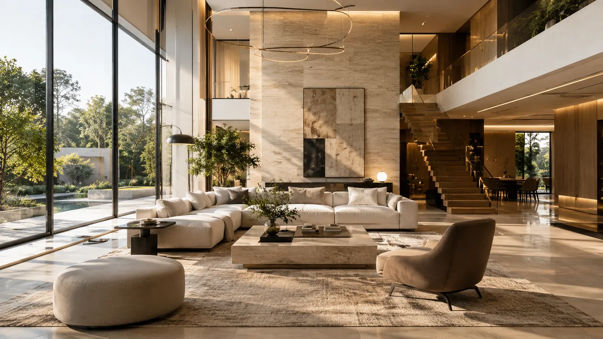

زمینه و هویت
پاسخ به موقعیت، مقیاس و نیازهای منحصربهفرد هر فضا.
معماری، پیوندی میان ایده، عملکرد و کیفیت تجربه فضاست. این وبسایت رویکرد طراحی و حوزههای فعالیت معرفیشده برای رادمهر گروپ را در قالب یک نمونهکار دیجیتال به نمایش میگذارد.
نگاه طراحی
هر پروژه با شناخت نیازها، زمینه و محدودیتهای خود معنا پیدا میکند. در این رویکرد، تصمیمهای مربوط به فرم، نور، متریال و سازماندهی فضا جدا از عملکرد و تجربه کاربران در نظر گرفته نمیشوند.
هدف این صفحه، معرفی یک چارچوب فکری روشن است؛ نه ادعای سابقه، تعداد پروژه یا دستاوردی که اطلاعات مستند آن در اختیار سایت قرار نگرفته است.
آشنایی با حوزههای فعالیت ↗
اصول راهنما
پاسخ به موقعیت، مقیاس و نیازهای منحصربهفرد هر فضا.
توجه به هماهنگی متریال، نور و بافت، همراه با دقت در اجرای جزئیات.
توجه به استفاده روزمره، دسترسی و کیفیت تجربه فضا.
اطلاعاتی مانند تاریخچه تأسیس، اعضای تیم، مدارک حرفهای، نشانی و سوابق اجرایی فقط پس از دریافت و تأیید اطلاعات مستند به این صفحه افزوده میشوند. این نسخه از سایت با هدف نمایش توانایی طراحی و توسعه وب در پورتفولیو آماده شده است.
شرح خدمات و نمونههای مفهومی را در صفحات مربوط ببینید.